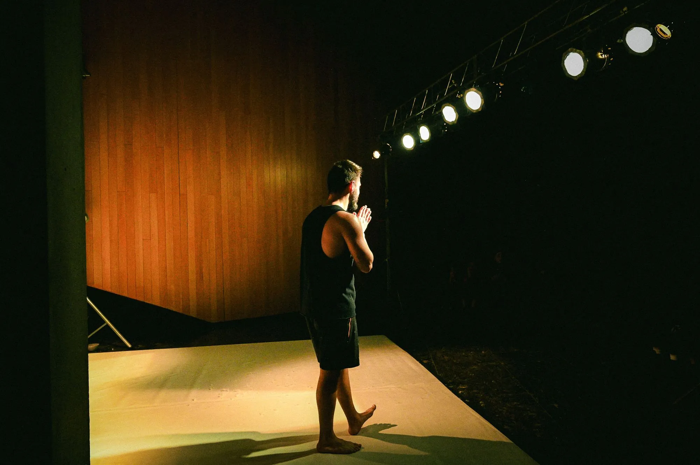

Marcus Moreno
Intervalo entre as obras
Entreato
Fotografias de cena, de ensaio e de rua. O corpo em lugares: biblioteca, parede, caldeira, laje, folhagem, palco.




Intervalo entre as obras
Fotografias de cena, de ensaio e de rua. O corpo em lugares: biblioteca, parede, caldeira, laje, folhagem, palco.
